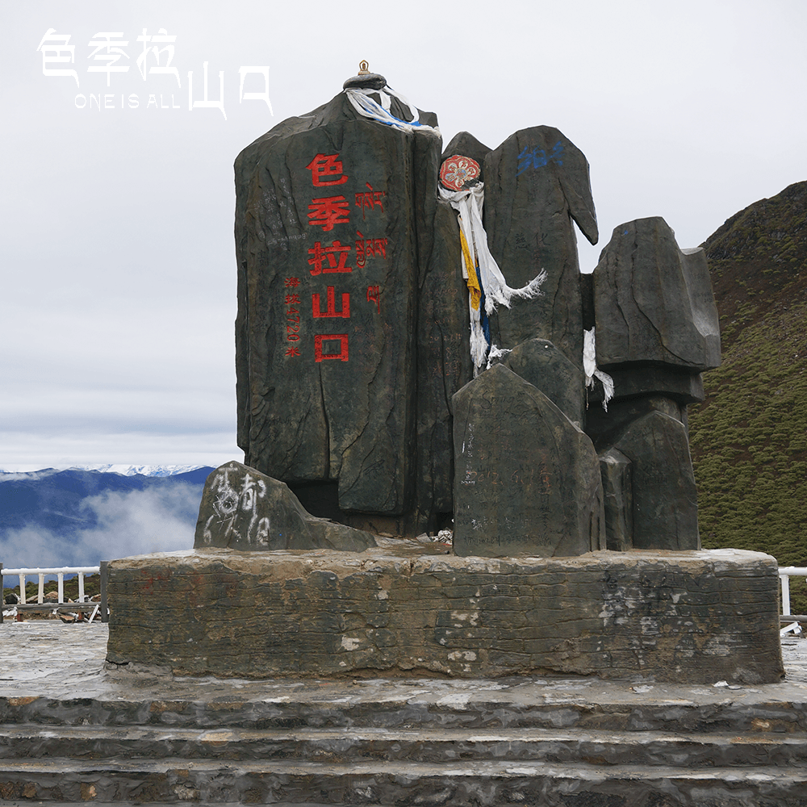
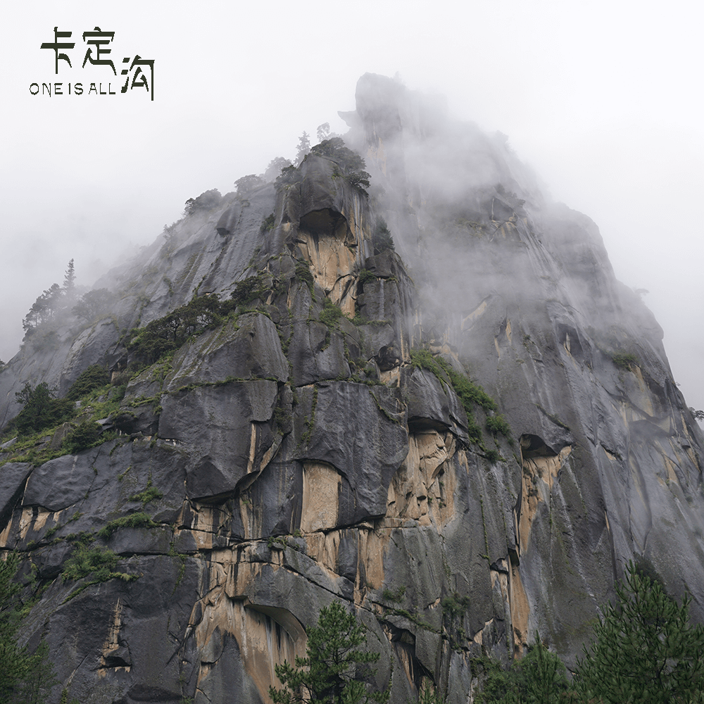

About
最初建立这个网站的原因已经记不清了，倒是偶尔或是经常写点东西来记录一些痕迹，想留些回忆，这里有很多我们一起的回忆，某个下午当你看到的时候，一定会停下手中的活，仔仔细细的浏览当初的每一瞬，会泡一杯茶，慢慢回味自己的青春。便像是午后电影，将青春一幕幕画面连接起来。
照片
生活若是过去时光的堆叠，我会选择堆叠一翦光影，调整好生命的焦距，以1/250秒为单位，沿著一道道曝光坚定地前进。
编辑
摄影者在没有运气遇到好编辑时，不妨学着自己去编辑。如果一个好摄影师同时又是一个好的编辑的话，那他就像老虎插上了翅膀。
裁剪
好的摄影师应该三分之一的时间在拍摄，用三分之一的时间学习和思考，三分之一的时间用来编辑整理自己的照片。
500PX
相机高像素不代表你能拍的清楚，摄影跟你拍摄的装备没有太大的关系，而是你怎么去观看，正确的态度是成就一张照片的基础。
ONE IS ALL—ALL IS ONE
-
布达拉宫
旺季:200元/人 淡季:100元/人群山围绕着拉萨，布达拉宫矗立在红山之上，山头那五色的经幡彰显着藏传佛教的神秘，藏胞手里那飞转的经轮成为拉萨广场独特的风景。虔诚的人围绕着布达拉宫，不知要走上多少圈。
Explore Now -
 色季拉山口
FREE湛蓝的江水倒映着皑皑的雪峰，晶莹的冰川逶迤在苍翠的原始森林，鲜艳精美的藏寨、牛羊如云的草原，不由分说的扑入了眼帘，颠覆着被都市生活禁锢已久的审美。
Explore Now -
南迦巴瓦峰
徒步:150元/人 游览车:260元/人南迦巴瓦几乎穷尽人们关于山的美好想象，对山的所有特制作出了最完美的诠释。人类从未停止过向往遥不可及的天堂，而南迦巴瓦正是这样的地方。
Explore Now -
鲁朗林海
90元/人座落在深山老林之中，素有“西藏江南”美称。区内树满青山、河流纵横，有规模巨大、终年碧绿苍翠、林木葱茏的原始森林和漫山遍野的杜鹃花。
Explore Now -
 卡定沟
20元/人卡定沟是典型的峡谷地貌，山高沟深，奇峰异石，古树参天，落差近200米的瀑布飞流直下，雄伟壮观，瀑布中一尊天然形成的大佛面目慈祥，天佛瀑布由此而得名。
Explore Now -
巴松措
120元/人在我们没有见到羊湖纳木错之前，遇到的巴松错足以让我们尖叫不已，那蓝绿的湖水就像蓝宝石。
Explore Now -
米拉山口
FREE我肃穆的站在飘舞的经幡中，将大势致菩萨夹于掌心，双手合什，仰望上苍，把内心的愿望随着经幡的飘扬一同带到天上，也许是那一刻我内心无比沉静。
Explore Now -
羊卓雍措
40元/人（岗巴拉山顶收取）水面上的蓝色不停地变幻，有时深，有时浅，整个羊湖就像一块巨大的调色板，装下了所有的蓝色，除了大自然，恐怕任何一位出色的画家都无法调出这样多的蓝色。
Explore Now
布达拉宫


- Tips 1
虽然多次到拉萨，但是从没进过布达拉宫，据说这个地方是一个不去后悔，去了更后悔的地方。但是实际逛下来，我觉得从历史、人文、风景各个角度来说，布达拉宫的200元门票绝对是整个西藏地区性价比最高的。逛完布达拉宫，只要有认真阅读每个讲解牌或者有个讲解员为你讲解，基本上对于西藏的历史就可以有一个较为完整和系统的认识了。
- Tips 2
布达拉宫旅游区的一天当中，温度变化较大，一般来说，晚上和早晨的气温非常低，而中午的温度则相对较高。干燥和湿润的变化很明显。下雨一般多在晚上。冬天比较干燥和寒冷，风很大而且很多，相比较而言，夏天就比较温暖多雨，冰雹下的比较多。
色季拉山口


- Tips 1
拍南迦巴瓦大多数人都是在色季拉山上，沿川藏线（318国道）从八一镇出发，翻过色季拉山口，下去就是鲁朗，也就是我们常说的西藏小瑞士，但是最好的角度是在直白村那个角度，离的很近，就在南迦巴瓦的山脚下，雪山的那种气势会让你相信真的有山神。
- Tips 2
在色季拉山上拍摄南迦巴瓦，最好有300以上的长焦头。
南迦巴瓦峰


- Tips 1
先从林芝乘班车到达位于林芝地区首府八一镇东南方向80km处的派乡（派镇），每天早晨约8:00在八一镇的桥头有中巴车前往，票价60元/人，行程约4小时。从派乡继续前行约18km抵达直白观景台，再前行数公里抵达直白村，直白村可提供住宿。这里没有班车抵达，一般需包车前往，价钱在200元以上，也可从派乡徒步前往。直白村离南迦巴瓦峰主峰的直线距离仅5km，沿路风光非常壮观。
- Tips 2
进入派镇后需要交门票，一种为徒步票，150元/人，一种为徒步票+游览车+一顿饭共260元/人。
鲁朗林海


- Tips 1
鲁朗海拔3700米，是一片典型高原山地草甸狭长地带，长约15公里，平均宽约1公里。两侧青山由低往高分别由灌木丛和茂密的云杉和松树组成“鲁朗林海”；中间是整齐划一的草甸，犹如人工整治一般；草甸中，溪流蜿蜒，泉水潺潺，草坪上报春花、紫苑花、草梅花、马先蒿花等成千上万种野花怒放盛开，颇具林区特色的木篱笆、木板屋、木头桥及农牧民的村寨星落棋布、错落有秩，勾画了一幅恬静、优美的“山居图”。
- Tips 2
鲁朗林海云蒸霞蔚、大气磅礴、风光优美，远处的雪山、冰川，与近处的原始森林、村落、河流交相辉映。鲁朗林海的树木以青冈为主，林中有大量鸟类栖息，色季拉山的杜鹊花海也为林芝著名景观。每年4月中旬到6月初，这里是杜鹃花的季节，各色杜鹃尽情绽放，是一片鸟语花香、神仙居住的地方。 近年鲁朗林海通过发展旅游让农牧民增收致富，变砍树为种树，全力保护生态环境。景区尉蓝的天空中，白云飘飘，时而象奔驰的骏马，时而又恰似高原上的牦牛；时而呼啸而去，时而又闲庭信步，象少女婀娜多姿，象小伙热情奔放。
卡定沟


- Tips 1
山崖天然形成的大佛、女神、观音、护法、如来佛祖、喇嘛颂经、神龟叫天、神鹰献宝、酥油灯，以及藏文“六字真言”佛字等，更是清新自然的天然氧吧。还有，酥油灯好难找！不是包车的小哥告诉我们谁会知道呢，说是看到了会有好运哦。
- Tips 2
来这里建议7.8.9月来是最好的，这个季节是雨季，雨水会更加充沛一些，所以看到的瀑布会更壮观一些，虽然这个景点是个小景点，但是设施还是非常的齐全的，公厕啊什么的都是齐全的，而且都是免费的。
巴松措


- Tips 1
多人租车较为推荐，可以从八一镇出发，也可从拉萨出发。
- Tips 2
巴松错最好的季节是秋天，天高气爽风清云淡，从湖岸到山岭漫山遍野皆层林尽染，丰富的色彩、静逸的环境，是摄影爱好者对胶卷进行“谋杀”的大好时机。由于湖岸边林木密布使得拍摄湖心扎西岛较为困难，需要往巴松错度假村背后的山林上爬，才能有机会居高临下地拍摄到湖心小岛犹如一颗宝石般镶嵌在碧绿湖中的美景。除了这样的景象外，巴松错边一般的拍摄题材以小景为多，需要摄影者独具慧眼去发现。
米拉山口


- Tips 1
米拉山口。风非常非常大，千万注意保护措施！
- Tips 2
米拉山口巨大的玛尼堆，大的让人震撼，让人敬仰。
羊卓雍措


- Tips 1
羊卓雍措要买门票了！要买门票了！要买门票了！40元/人！40元/人！40元/人！
- Tips 2
从拉萨出发，经过曲水的雅鲁藏布江大桥，沿拉亚公路南行170km，沿途会看到羊湖电站，随后到达海拔4990m的岗巴拉山口，在这里可以俯瞰羊卓雍措。
- Tips 3
来羊湖一定要挑个好天气，晴朗天气下羊湖的魅力能让你说不出话，相信我！


{kind=link}